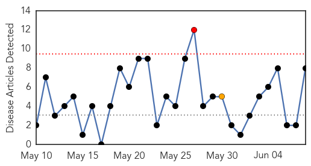
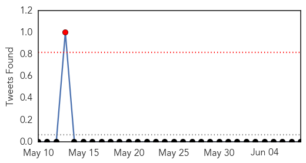

30 Day Trends
Web: 1 alerts, 1 warnings
Twitter: 0 alerts, 0 warnings
Top Articles:
- 0.996
- SKN Monitoring MERS and ZIKA
- 0.985
- Mumbai: First showers arrive, so does the threat of dengue
- 0.985
- 586 people test positive for dengue in State
- 0.943
- Less dengue cases noted in WVisayas
- 0.916
- Private doctors roped in to keep monsoon diseases at bay
- 0.738
- Thai Burma Border – Dengue Fever Outbreak « Karen News
- 0.712
- The Deepening Humanitarian Crisis in Yemen
- 0.562
- IT Ministry preparing to win fight against dengue
Top Tweets:
- 0.536
- Flavivirus news: Combating dengue with infectious disease forecasting - Medical Xpress: Combati... http://t.co/AMF2O777sg pathogenposse
Web/News Articles
Tweets
Article Locations

Article Confidences